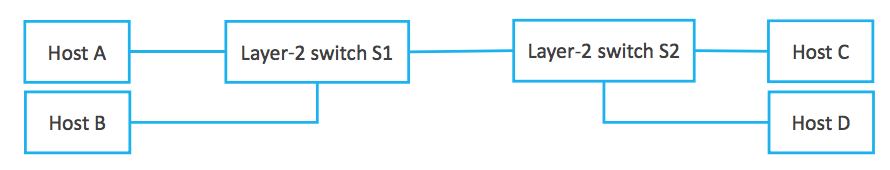
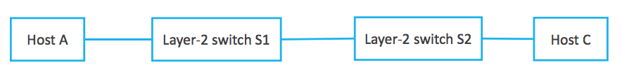
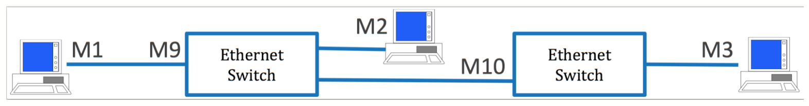
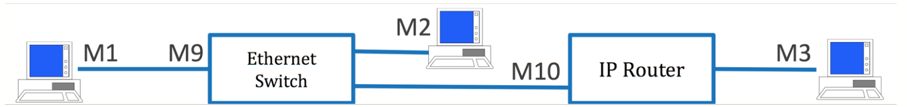
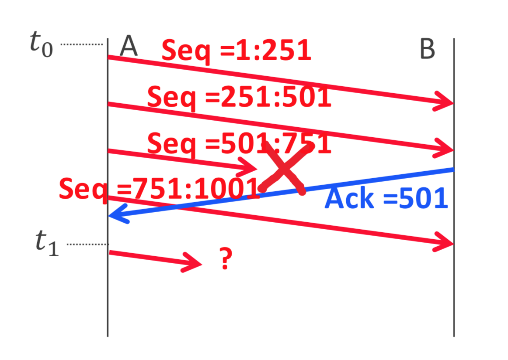
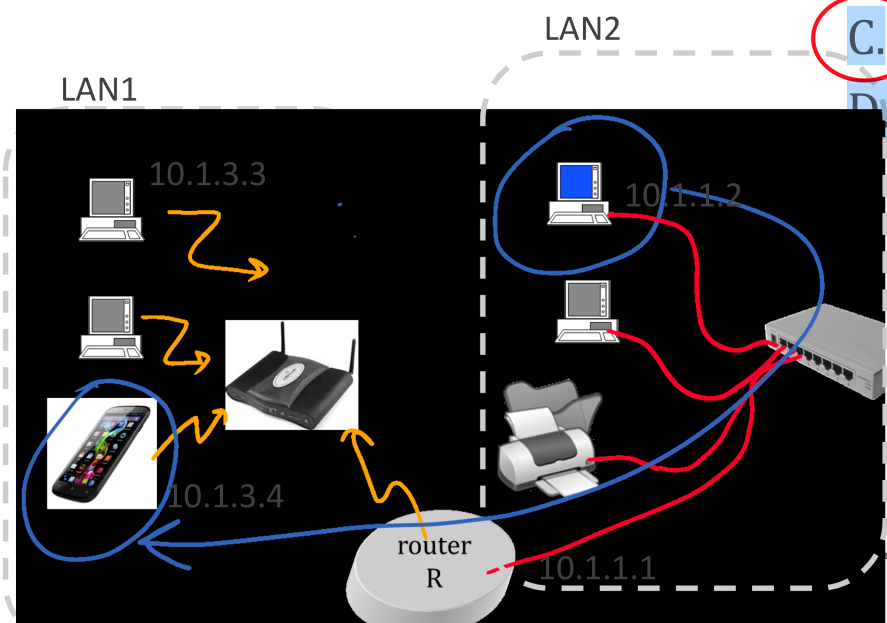
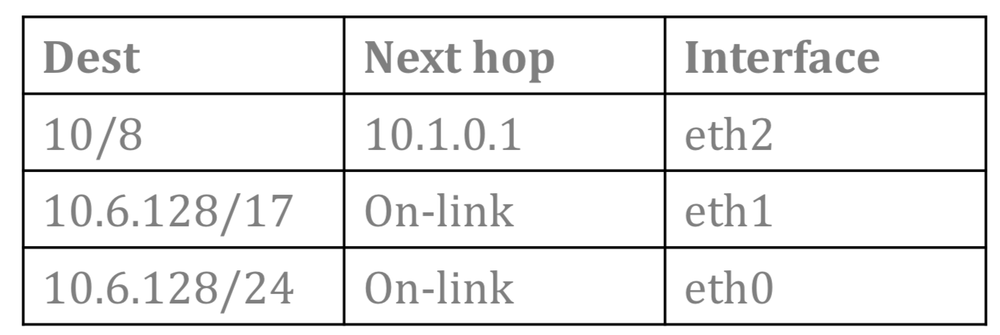
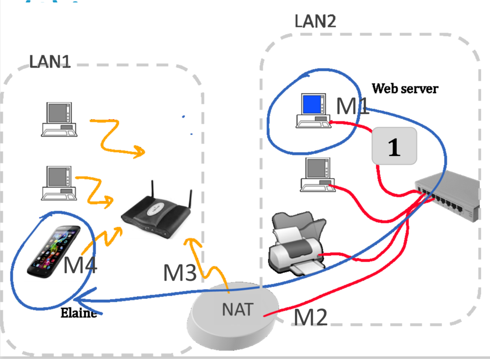
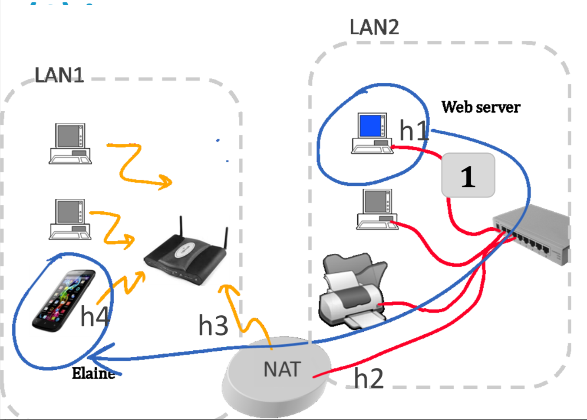

A sends an Ethernet frame that contains an IP packet to C. The MAC destination address observed at A is…
q1
[ ] The MAC address of the interface of S1 that links to A.
[ ] The MAC address of the interface of R1 that links to S1.
[ ] The MAC address of A.
[ ] The MAC address of C.
At layer 2 there is no need for routing Ethernet packets
With DHCP a host can acquire…
[ ] its IP address, its network mask and the IP address of a DNS server but never the IP address of its default gateway.
[ ] Its IP address, its network mask, the IP address of its default gateway and the IP address of a DNS server.
[ ] its IP address, its network mask and the IP address of its default gateway but never the IP address of a DNS server.
[ ] its IP address, the IP address of its default gateway and the IP address of a DNS server but never its network mask.
How many frames can be transmitted in parallel in this network ?
q2
[ ] $>=$4
[ ] 1
[ ] 2
[ ] 3
A web server at EPFL sends an IP packet to Elaine, who is at home behind a NAT. No VPN is used. The IP destination address of the packet sent by the web server is …
[ ] the IP address of a DNS server.
[ ] the IP address of Elaine’s device in her home network.
[ ] the private (LAN) IP address of Elaine’s NAT.
[ ] the public (WAN) IP address of Elaine’s NAT
When a layer-2 switch forwards a packet…
[ ] it decrements the TTL if it is an IPv4 packet but does not modify the HL if it is an IPv6 packet.
[ ] it decrements the TTL if it is an IPv4 packet and the HL if it is an IPv6 packet.
[ ] it decrements the HL if it is an IPv6 packet but does not modify the TTL if it is an IPv4 packet.
[ ] it does not modify the IPv4 TTL nor the IPv6 HL.
A sends an Ethernet frame that contains an IP packet to C. The MAC destination address observed at A is…
q3
[ ] The MAC address of the interface of S1 that links to A.
[ ] The MAC address of the interface of S2 that links to S1.
[ ] The MAC address of C.
[ ] The MAC address of A.
Elaine, at home in Lausanne behind a NAT, receives an IP packet from a web server in California. The IP source address of the packet received by Elaine is …
[ ] the IP address of the web server.
[ ] the private (LAN) IP address of the NAT.
[ ] the IP address of Elaine’s DHCP server.
[ ] the public (WAN) IP address of the NAT.
Joe builds a network by first connecting 3 bridges to each other, then connecting each host to one of the 3 bridges.
[ ] This does not work because the topology has a loop.
[ ] This works for unicast frames but not for broadcast frames (such as ARP requests).
[ ] This works because the spanning tree protocol disables at least one port to prevent a loop from happening.
[ ] This works because bridges compute shortest paths to each destination.
The goal of an ARP request is to…
[ ] Determine the MAC address of an interface that has a given IP address.
[ ] Determine the MAC address of the DNS server.
[ ] Determine the IP address of an interface that has a given MAC address.
[ ] Determine the IP address of the default gateway.
A host A receives an IPv6 packet with Hop Limit = 255.
[ ] This is an error, a received packet should always have a Hop Limit < 255.
[ ] The source of the packet is at least 1 hop away from A.
[ ] The source of the packet is 255 hops away from A.
[ ] The source of the packet is onlink with A.
Joe builds a LAN with several bridges and connects them as a ring
[ ] This does not work as there is a loop in the topology.
[ ] The spanning tree protocol computes a broadcast tree but some forwarding loops might occur for some source-destination pairs.
[ ] The spanning tree protocol prevents forwarding loops by computing appropriate MAC forwarding tables.
[ ] The spanning tree protocol disables one of the ports and forces the active topology to be a tree.
Say what is true
[ ] Bridges decrement the TTL field in IPv4 packets but do not modify the HL field in IPv6 packets that they forward.
[ ] Bridges do not modify the TTL field in IPv4 packets but decrement the HL field in IPv6 packets that they forward.
[ ] Bridges do not modify the TTL field in IPv4 packets and do not modify the HL field in IPv6 packets.
[ ] Bridges decrement the TTL field in IPv4 packets and the HL field in IPv6 packets that they forward.
M1 sends one IPv6 packet to M2 and one to M3. The MAC destination addresses observed at M1 are …
q4
[ ] M2 and M3.
[ ] M9 and M10.
[ ] M9 in both packets.
[ ] M2 and M10.
At home in Lausanne, Joe receives IPv4 Internet service from Swisscom. Joe’s PC, at home, sends an ARP request.
[ ] The ARP request is sent to Joe’s DHCP server.
[ ] The ARP request is sent to the DNS server configured in Joe’s PC.
[ ] The ARP request is broadcast to all hosts in the same LAN as Joe’s PC.
[ ] The ARP request is broadcast to all hosts in Swisscom’s network.
A link-local address such as fe80::a00:20ff:fe78:30f9 …
[ ] can be used to communicate with all other hosts in the same private network made of one IP router and several Ethernet switches.
[ ] cannot be used to communicate with other hosts.
[ ] can only be used to communicate with a DHCP server.
[ ] can be used to communicate only with destinations in the same LAN.
On a full-duplex Ethernet link …
[ ] the medium access protocol is CSMA/CD.
[ ] there is no medium access protocol.
[ ] the medium access protocol is CSMA/CA.
[ ] the medium access protocol is Aloha.
A host A in Lausanne communicates with a host B in the US (no VPN is used). With ARP, A can learn…
[ ] the MAC address of A’s next-hop router
[ ] the IPv4 address of B
[ ] the IPv4 address of A’s next-hop router
[ ] the MAC address of B
M1 sends one IPv6 packet to M2 and one to M3. The MAC destination addresses observed at M1 are …
q5
[ ] M9 in both packets.
[ ] M9 and M10.
[ ] M2 and M3.
[ ] M2 and M10.
A machine M that runs both IPv4 and IPv6 receives one IPv4 packet with Time To Live (TTL) = 255 and one IPv6 packet with Hop Limit (HL) = 255
[ ] The sources of both packets are onlink with M.
[ ] We cannot conclude for sure that any of the two packets is onlink with M.
[ ] The source of the IPv4 packet must be onlink with M but we cannot conclude the same thing for the source of the IPv6 packet.
[ ] The source of the IPv6 packet must be onlink with M but we cannot conclude the same thing for the source of the IPv4 packet.
Elaine’s PC uses IPv6 and streams music on the EPFL network using iTunes; iTunes sends IPv6 packets with Hop Limit equal to 1.
[ ] These packets will never be forwarded by any router.
[ ] These packets may be forwarded to any host in the public Internet.
[ ] These packets may be forwarded only by EPFL routers.
[ ] These packets may be forwarded by Elaine’s default router but not further.
In an IPv6 network where DHCP is enabled, a host can use DHCP to determine…
[ ] Its IPv6 address but not its network mask
[ ] Its network mask but not its IPv6 address
[ ] Both its IPv6 address and its network mask
[ ] DHCP cannot be used for obtaining any of these two things
An IPv6 host can obain a valid IPV6 address using …
[ ] by using SLAAC but not by using DHCP
[ ] by using DHCP but not by using SLAAC
[ ] either by using SLAAC or DHCP,depending how things are configured
[ ] neither SLAAC nor DHCP are used for that
A and B use a fixed sliding window of size 1000 Bytes. Packets 1,2,3,4 are of size 250 bytes. At time ùíïùüé , the protocol is initialized. At time ùíïùüè ‚Ä¶
q6
[ ] A is allowed to transmit byteswith sequence number < 1001
[ ] A is allowed to transmit byteswith sequence number < 1501
[ ] A is allowed to transmit byteswith sequence number < 2001
If a TCP source receives a Window value equal to 0…
[ ] it has to stop sending new data
[ ] this is impossible, the minimum window is at least one byte
[ ] this is impossible, the minimum window is at least one TCP segment
[ ] it can send new data only if the pushbit is set
When TCP retransmits some segments that were detected as lost …
[ ] TCP should retransmit the segments in as many segments as they were originally sent
[ ] TCP may group several segments into one if they are contiguous and fit inside an IP packet
[ ] TCP should retransmit only thesegments for which the push bit was set
A and B use TCP. At time ùíïùüé, the protocol is initialized. At time ùíïùüè A detects a loss with Fast Retransmit. The value of TCPMaxDupACKs at A is‚Ķ
[ ] 1
[ ] 2
[ ] 3
[ ] 501
[ ] 751
[ ] 1001
Say what is true
[ ] A TCP server uses a different localport number for receiving a SYNpacket and for reading data on theconnection that results fromreceiving the SYN packet
[ ] A TCP server uses a different socketfor receiving a SYN packet and forreading data on the connection thatresults from receiving the SYNpacket
[ ] 1 and 2
[ ] None of the above
H has an IPv4 packet to send on its local Ethernet, with a multicast IP destination address ùëö.
[ ] H sends an ARP Request in order to obtain the list of destination MAC addresses of receivers of group ùëö that are on this local Ethernet.
[ ] H computes the destination multicast MAC address by addingthe last 23 bits of ùëö to a knownstring of 25 bits.
[ ] H learns the list of destination MAC addresses of receivers of group ùëö that are on this local Ethernet by listening to IGMP JOIN messages.
[ ] H learns the multicast destination MAC address by listening to the IGMP JOIN messages.
Which netmask is valid for Elaine’s device according to IP principles
q7
[ ] 255.0.0.0
[ ] 255.255.0.0
[ ] 255.255.255.0
[ ] 255.255.255.255
R has 3 interfaces.. The routing table at R is given below…
q8
R has a packet to forward,, with destination address 10.6.129.1. To which interface is the packet forwarded ?
[ ] eth0
[ ] eth1
[ ] eth2
[ ] R can choose eth0 or eth1
Elaine, behind a NAT, receives a packet from a webserver. The MAC destination address seen at \(1\) is
q9
[ ] M1
[ ] M2
[ ] M3
[ ] M4
Elaine, behind a NAT, receives a packet from a webserver. The IP destination address seen at \(1\) is
q10
[ ] h1
[ ] h2
[ ] h3
[ ] h4
Which are valid IPv4 addresses ?
[ ] 1.2.3.4
[ ] 1.2.3.4.5
[ ] 128.228.328.428
[ ] A and B
[ ] A and C
[ ] B and
[ ] A B and C
Which are valid IPv6 addresses ?
[ ] 2001:2002:2003
[ ] 2001:2002::2003
[ ] 2001::2002::2003
[ ] A and B
[ ] A and C
[ ] B and
[ ] A B and C
With DHCP a host can learn
[ ] Its own IP address
[ ] The IP address of its default router
[ ] The MAC address of its default router
[ ] A and B
[ ] A and C
[ ] A B and C
With ARP a host A can learn …
[ ] A’s own IP address
[ ] The MAC address of a destination that is on-link with A
[ ] The MAC address of a destination that is not on-link with A
[ ] A and B
[ ] A and C
[ ] A B and C
The solicited node multicast address …
[ ] Is an IPv6 group address associated to as specific unicast IPv6
[ ] Is an IPv6 group address that corresponds to all routers within a given LAN
[ ] Is an IPV6 group address that corresponds to all DHCP servers or relays within a given LAN
[ ] A and B
[ ] A and C
[ ] B and C
[ ] A B and C
CSMA collisions …
[ ] Cannot occur because the medium is transitive
[ ] Can occur if the bandwidth‐delay product is smaller than 1
[ ] Can occur regardless of the bandwidth delay product
In a WiFi network with a single channel and a single base station, how many frames can be transmitted concurrently ?
[ ] At most one in total
[ ] One from mobile to base station and one from base station to mobile
[ ] At most one per mobile to base station and one from base station
[ ] At most one per mobile to base station and one per mobile from base station
Does this always work ?
q11
[ ] Yes because learning propagates
[ ] Yes because MAC addresses are unstructured
[ ] Only in some special cases
[ ] No, never
In this case it works but it will break if there are loops !
B1 is the root. What is the role of each port of B3 (b=blocking, r=root, d=designated)?
q12
[ ] 1r, 2d, 3b
[ ] 1r, 2d, 3d
[ ] 1r, 2b, 3b
[ ] 1r, 2b, 3d
[ ] 1b, 2r, 3b
[ ] 1b, 2r, 3b
[ ] 1d, 2r, 3b
[ ] 1d, 2b, 3d
[ ] None of the above
A has an IP packet destined to C; S1 is a switch; what should A do ?
q13
[ ] Send an ARP request in order to obtain the MAC address of C (then send packet to this MAC address)
[ ] Send an ARP request in order to obtain both the MAC address and the VLAN label of C (then send packet to this MAC address and to this VLAN)